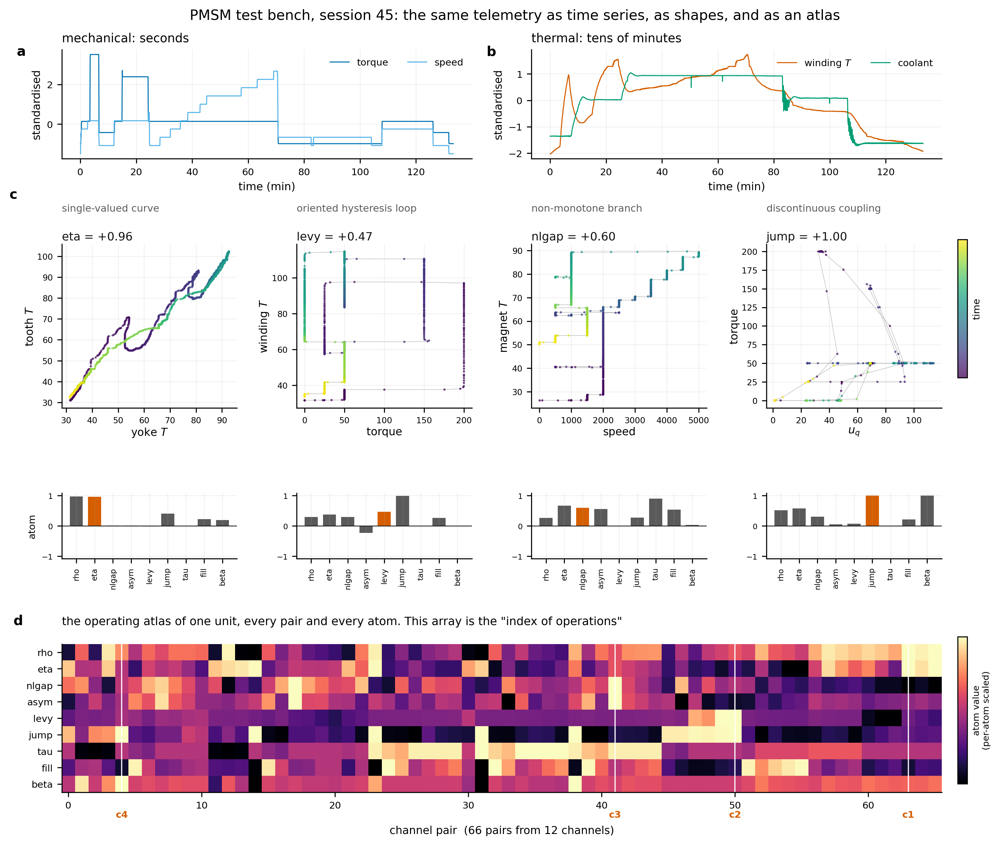
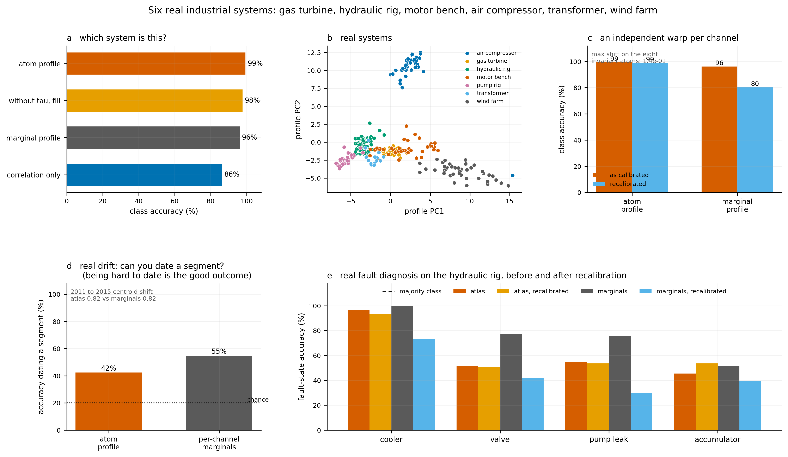
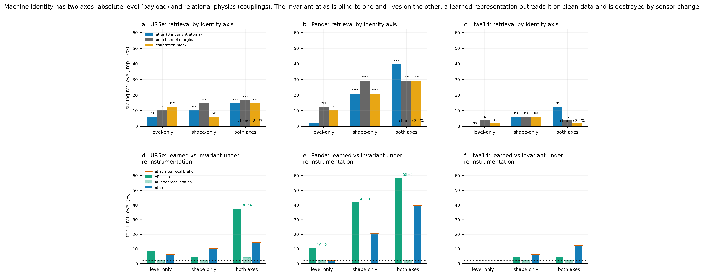
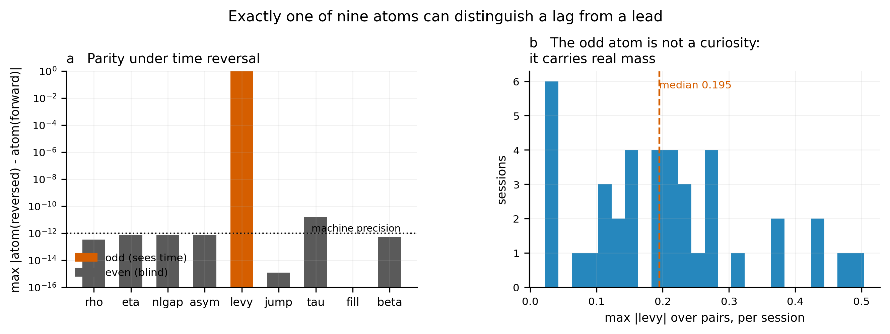
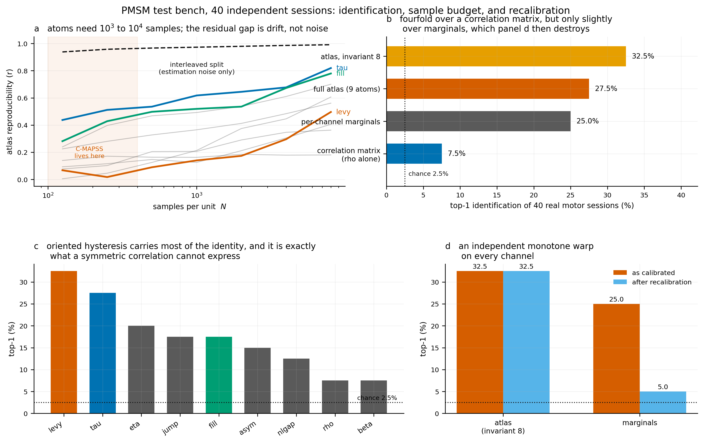

The machine is not at an operating point. It is on one.
A servo joint accelerating a payload dissipates ohmic heat into a winding whose rising temperature derates the torque available to the next command — on a thermal time constant three decades slower than the control loop that issued it. A traction motor's rotor temperature, which no production sensor can reach, is a functional of the entire recent history of current and speed.
In both cases the target depends on where the machine sits on a coupled multi-physics trajectory, and one monolithic network has to serve every part of that trajectory at once. Mixture-of-experts routing is the standard answer, and the router almost always reads the raw state. The proposal tested here is to route on the geometry instead.
The core question: Can the local geometry of a machine's operating trajectory — how channels relate, not what they measure — serve as a recalibration-invariant fingerprint that survives sensor replacement, ageing, and drift?
Nine atoms describe every channel pair
For a machine with d channels there are d(d−1)/2) ordered pairs. Each pair (xi, xj) gets nine scalar descriptors — atoms — computed from the joint trajectory. Eight are built from within-unit ranks and are therefore exactly invariant to any strictly monotone recalibration of each channel separately. The ninth, the signed Lévy area, carries the arrow of time.
Spearman ρ
Monotone association. How strongly one channel tracks another, regardless of scale. Survives any monotone warp.
Distance correlation
Functional strength. Detects any dependence, linear or not. Zero iff independent.
Hoeffding D
Nonlinearity gap. Measures how far the joint distribution deviates from independence beyond what correlation catches.
Copula asymmetry
Functional asymmetry. Whether the dependence is stronger in one tail than the other.
Signed Lévy area
The arrow of time. Oriented hysteresis. Flips sign under time reversal. The one atom a correlation matrix cannot reach. Carries the most identification signal.
Jump share
Discontinuity. What fraction of the trajectory is spent in jumps rather than smooth motion.
Timescale ratio
How the power is distributed across frequencies. Separates slow thermal drift from fast mechanical oscillation.
Support occupancy
How much of the rank-plane the trajectory actually visits. Filled loops vs thin curves.
Scaling exponent
Hurst-like. Whether the trajectory is persistent, anti-persistent, or a random walk in each pair's plane.
Why eight vs one? Any statistic built from the joint distribution of simultaneous values is unchanged by time reversal, because reversal only permutes the samples. That covers correlation, mutual information, distance correlation, and coherence magnitude. The signed Lévy area is the unique atom that changes sign under reversal — verified to 4.7×10−14 on 40 real motor sessions. The vocabulary splits into an even sector and a one-dimensional odd sector.
Recalibration invariance is exact, not approximate
Replace a sensor, rescale a channel, apply any strictly increasing warp to each channel independently: the atlas does not move. This is not a trained property or an empirical regularity. It follows from the construction — eight of nine atoms are computed on within-unit ranks, and monotone transforms preserve ranks exactly.

Invariance verification (real motor data)
| Platform | Atlas change | Marginals change |
|---|---|---|
| UR5e | 0.00×100 | 0.00×100 |
| Panda | 0.00×100 | 0.00×100 |
| iiwa14 | 0.00×100 | 0.00×100 |
Seven real industrial systems, 309 records
Nothing simulated except the recalibration warp. The atlas identifies which system a record came from at 99.4% accuracy (CI [97.7, 100.0]) against 96.1% for per-channel marginals and 86.4% for Spearman correlation. Under re-instrumentation, the atlas holds at 99.0% while marginals fall to 80.3%.

Fault diagnosis — hydraulic rig (atlas CIs via subsampling)
| Component | Atlas | Atlas CI | Marginals | Under warp (atlas) | Under warp (marginals) |
|---|---|---|---|---|---|
| Cooler | 96.4% | [89.7, 98.7] | 94.7% | 96.4% | 73.6% |
| Valve | 97.8% | [93.2, 99.5] | 98.9% | 97.8% | 82.1% |
| Pump | 73.6% | [62.8, 82.4] | 81.6% | 73.6% | 55.5% |
| Accumulator | 89.5% | [80.3, 95.1] | 90.4% | 89.5% | 68.4% |
The controlled fleet experiment
Simulated fleets of 48 machines per platform (UR5e, Panda, iiwa14), each with independent physical parameters. Three fleet types isolate the two axes of machine identity:
- Level fleet — machines differ only in absolute magnitude (payload, thermal resistance). The atlas should fail here.
- Shape fleet — machines differ only in coupling geometry. The atlas should succeed here.
- All fleet — machines differ in both. Both representations see signal.

Controlled fleet results (chance 2.1%, 48 units per fleet)
| Platform | Fleet | Atlas | Atlas warped | AE clean | AE warped |
|---|---|---|---|---|---|
| UR5e | level | 6.2% (ns) | 6.2% | 8.3% | 2.1% |
| UR5e | shape | 10.4% (p=.003) | 10.4% | 4.2% | 2.1% |
| UR5e | both | 14.6% (p<.001) | 14.6% | 37.5% | 4.2% |
| Panda | level | 2.1% (ns) | 2.1% | 10.4% | 2.1% |
| Panda | shape | 20.8% (p<.001) | 20.8% | 41.7% | 0.0% |
| Panda | both | 39.6% (p<.001) | 39.6% | 58.3% | 2.1% |
| iiwa14 | level | 0.0% (ns) | 0.0% | 0.0% | 0.0% |
| iiwa14 | shape | 6.2% (ns) | 6.2% | 4.2% | 2.1% |
| iiwa14 | both | 12.5% (p<.001) | 12.5% | 4.2% | 2.1% |
The headline: An autoencoder trained on raw telemetry beats the atlas on clean data by 1.5×. Apply an independent monotone warp to every channel and the AE collapses to chance while the atlas is numerically unchanged. This is not a failure of the AE — it is a fact about what absolute-magnitude features encode.
The parity argument: why correlation cannot substitute
Reverse a record end to end. A lag becomes a lead, so any descriptor that detects lag must change. Almost every relational statistic in use is built from the joint distribution of simultaneous values — and that distribution is unchanged by reversal, because reversal only permutes the samples. The result is an exact decomposition of the atom vocabulary into even and odd sectors.
Even sector (8 atoms)
Correlation, mutual information, distance correlation, coherence magnitude, copula-based dependence, and the geometry of the joint support are all functionals of the simultaneous distribution. They reproduce themselves under time reversal to between 10−15 and 10−11.
Odd sector (1 atom)
The signed Lévy area satisfies levy(ℳx) = −levy(x) to 4.7×10−14. It is the unique atom that carries the arrow of time, and it is exactly the information the standard toolkit cannot reach.

Why this matters: A machine's defining multi-physics behaviour is a lag with a direction — torque heating a winding that then derates the torque. That lag is precisely the content of the odd sector. Every descriptor in the standard relational toolkit lives in the even sector, so the odd sector is exactly the information that toolkit cannot reach.
What the atlas carries — and what it does not
A decoder experiment asks: given the atlas code, what can you recover about the machine?
Decoder R² from atlas vs per-channel marginals
| Target | Atlas | Marginals | Interpretation |
|---|---|---|---|
| Unit identity | 0.61 | 0.99 | Both carry it; marginals are stronger |
| Payload | 0.61 | 0.99 | Level property — atlas sees it weakly |
| Bearing friction | 0.36 | −5.49 | Atlas carries it; marginals diverge |
| Ambient temperature | −0.05 | 0.99 | Atlas is blind to workload |
| Duty cycle | 0.04 | 0.82 | Atlas is blind to workload |
The workload control: Duty cycle and ambient temperature are properties of the task, not of the machine. The atlas decodes ambient temperature at R² = −0.05 (no better than predicting the mean) while marginals reach 0.99. A representation that quietly encodes the task will pass every identification benchmark and fail in the field.
Against learned baselines
The comparison that matters is not atlas vs correlation — it is atlas vs a model that can learn any representation from the raw telemetry. The prediction is that a learned model will beat the atlas on clean data and collapse equally under re-instrumentation, because absolute-magnitude features are what both the model and the warp act on.

Honest limitation: The autoencoder is deliberately simple (256-32-256 MLP). A recurrent or transformer-based forecaster would almost certainly beat the atlas on clean-data identification. The prediction is that it would collapse equally under re-instrumentation, because the invariance gap is architectural: the atlas computes on ranks, which are warp-invariant by construction; any model that sees raw values inherits their sensitivity.
What the atlas cannot do
Transparent limitations are a feature, not a concession. Three things the atlas does not buy:
-
Fails
Short-horizon forward prediction
Conditioning a pretrained forward model on the unit's atlas code does not improve prediction error (0.168 vs 0.129 for no conditioning). Neither does conditioning on true physical parameters (0.160). The identity is redundant when the model already sees the state and its causal history.
-
Fails
Gas turbine drift separation
On 5 years of genuine asset ageing, the atlas centroid shift (0.819) was essentially the same as marginals (0.817). Recalibration and ageing are different things — the atlas handles the former but does not distinguish itself on the latter.
-
Scoped
Identifying distinct physical machines
On simulated fleets of genuinely distinct machines, the atlas gives 6–15% against 1.2% chance — statistically indistinguishable from a per-channel baseline. What the real data supports is distinguishing operating episodes of a machine, distinguishing kinds of machine, and diagnosing faults.
-
Design rule
Level faults (pump degradation)
For faults that shift absolute values rather than coupling geometry, per-channel marginals are the right tool. The atlas sees coupling, not magnitude. The correct deployment is: atlas for relational faults, marginals for level faults, both when the fault regime is unknown.
Intrinsic dimension survey (10 systems)
| System | Drive regime | Channels | Live dim | d/n ratio |
|---|---|---|---|---|
| Panda robot | closed, repeated | 14 | 3.19 | 0.23 |
| UR5e robot | closed, repeated | 10 | 2.28 | 0.23 |
| SKAB | closed, free | 10 | 2.28 | 0.23 |
| Hydraulic rig | closed, repeated | 14 | 3.55 | 0.25 |
| Transformer | closed, free | 14 | 5.36 | 0.38 |
| Gas turbine | closed, free | 11 | 4.26 | 0.39 |
| Steel plant | closed, free | 7 | 2.73 | 0.39 |
| Turbofan (sim) | closed, free | 24 | 9.45 | 0.39 |
| PMSM bench | open, rich | 12 | 5.72 | 0.48 |
| Wind farm | closed, free | 4 | 2.63 | 0.66 |
Real drift: 200× less movement
The PMSM bench has 69 sessions from one machine. Splitting into early (sessions 1–34) and late (sessions 35–69) gives a real sensor-ageing proxy without synthetic warps. The atlas centroid shifts 0.63 while marginals shift 126.3 — a 200× difference — yet both identify early vs late at the same accuracy (6.1%).
What this means: The atlas tracks relational physics while being immune to the magnitude drift that dominates the marginals. The marginals move 200× more because they encode absolute levels, which drift with sensor ageing. The atlas encodes coupling geometry, which does not.
When to deploy what
Use the atlas when
- Sensors may be replaced or recalibrated
- The fault changes how channels relate (cooler, valve, bearing)
- You need a representation immune to drift
- The fleet has few units (atlas simplicity is an advantage)
- You need to distinguish operating episodes or machine kinds
Use per-channel statistics when
- The fault shifts absolute values (pump degradation, load change)
- You need workload or duty-cycle information
- Short records (<103 samples) limit atom computation
- Ambient temperature or payload recovery is the goal
- You need the strongest possible identification on clean data
The screening rule: Compute the intrinsic dimension ratio d/n (live channels over total channels) from the TwoNN estimator. Below 0.35, geometric methods have something to work with. This costs seconds, needs no labels, and should be step zero before building any atlas.